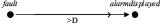
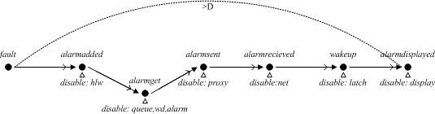

Mine Pump (Failure Detection Subsytem)
Minepump is a design of a fault-detection mechanism for a distributed mine-drainage controller. A watchdog task periodically checks the availability of a water level sensing device by sending a request and extracting acknowledgements that were received and queued during the previous cycle (by another sporadic task). When the watchdog finds the queue empty, it registers a fault condition in a shared memory which is periodically read, and forwarded to a remote console, by a proxy task.
Size: 9 TAs, 8 Clocks
Original Scenario: The proposed scenario verifies that the failure of the high-low water sensor is always informed to the remote operator before a given deadline. This scenario correctly captures the requirement due to the fact that the system models a permanent single fail and there exists only one alarm display event.

Tabla: mine2.active
Refined Scenario: Scenario sequentiality allows us to illustrate how the slicer manages to disable components at each point (actually this is done over the underlying observer). As depicted in the Tables~\ref{table:time_memory} and \ref{table:counter_examples}, speed improvements are significant and the trace generated is halved in number of steps.

Tabla de actividad: